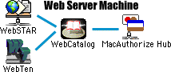
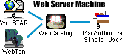
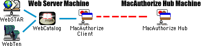
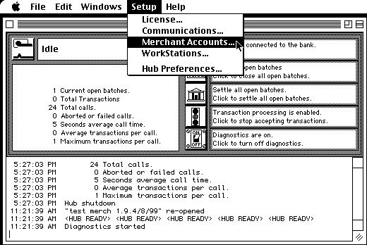
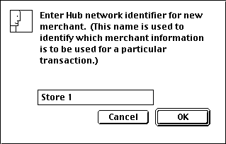
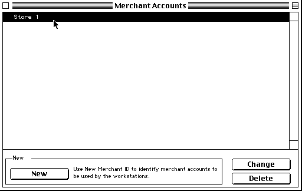

Setting up WebMerchant for MacAuthorize Hub
| This configuration is described in this document. It is the recommended standard configuration for WebMerchant and MacAuthorize. |  |
| This configuration can work, but is not recommended because the single-user version of MacAuthorize cannot Settle transactions automatically -- you must manually Settle every day. |  |
| This configuration works fine, too, but is not described in this help document. Simply choose "MacAuthorize" in the pulldown menu in WebMerchant's Preferences, and type the name of the MacAuthorize Client application. You will need to configure MacAuthorize Client according to the instructions provided by Tellan. |  |
MacAuthorize Hub requires some extra information from WebMerchant, in order for it to know which bank merchant account to apply credit card charges to. When you configure your MacAuthorize Hub, you must create a Merchant Account preference for each of the merchant accounts that the Hub will control. Choose the "Merchant Accounts..." menu item from the "Setup" menu, as seen below:

If you have not set up MacAuthorize Hub before, then the list of merchant accounts in the window will be empty. In this case, you will need to use the "New" button to create your merchant preferences. Type some text that identifies this merchant account into this sreen.

Now that you have a merchant account created, you must type its name into WebMerchant's
preferences for "Hub Merchant Identifier". If you create more stores in
WebMerchant, then you must create a MacAuthorize Hub Merchant Account for each one,
and type the name of the merchant account into WebMerchant's preferences for that
particular store. This assures that each individual store will apply credit to the
correct merchant account.
